Making thematic maps in R
Geog 315 T1 2022
Overview
We cover a lot of ground in this lab, including handling simple spatial data in R, and the options available for mapping using the tmap package. Keep in mind that you can refer back to last week’s material if you need to refresh your memory of anything we did previously.
The instructions this week are in several parts, to make it a bit easier to follow.
You may want to take a quick look at the last section so you know what is expected of you, then come back to this page and work through the first three to learn the various tools you can use to accomplish what is asked of you.
Some of this week’s material may be hard to follow at first, and some of it won’t come together completely until I explain the pipe (%>%) operator in class, but bear with us and all will become clear (and the relevant lectures have already started).
Videos
Video support for this week’s lab is here
Introducing the data
First you need to load the sf library for handling spatial data, tmap for mapping, and dplyr for data wrangling.
library(sf)## Linking to GEOS 3.8.0, GDAL 3.3.1, PROJ 8.1.0library(tmap)## Registered S3 methods overwritten by 'stars':
## method from
## st_bbox.SpatRaster sf
## st_crs.SpatRaster sflibrary(dplyr)##
## Attaching package: 'dplyr'## The following objects are masked from 'package:stats':
##
## filter, lag## The following objects are masked from 'package:base':
##
## intersect, setdiff, setequal, unionThe data for this week are election results from the US Presidential Election of 2016 (the one that gave us president Donald J. Trump). I’m sticking with that election because the data are more interesting than in 2020.
The data are at the county level for the US (over 3000 counties of wildly varying populations), with numbers of votes recorded for the two major parties—Democrat (dem) and Republican (gop)— along with some other minor parties: Libertarian (lib), Green (grn), Evan McMullin (una) and ‘Other’ (oth).
You will find the data in the this geopackage file. Download it and save it to an accessible folder on the computer you are working on (this will be on the H: drive if you are on a lab computer). Then create a new RStudio project in that folder like you learned last week.
Then you can read the data using the st_read function
results <- st_read('election.gpkg')## Reading layer `election' from data source
## `/home/osullid3/Documents/teaching/Geog315/_labs/week-03/election.gpkg'
## using driver `GPKG'
## Simple feature collection with 3092 features and 10 fields
## Geometry type: MULTIPOLYGON
## Dimension: XY
## Bounding box: xmin: -2775548 ymin: -170310 xmax: 2256204 ymax: 3165691
## Projected CRS: AlbersTo make sure all is as it should be, take a look at the first few rows of the data using the head function
head(results)## Simple feature collection with 6 features and 10 fields
## Geometry type: MULTIPOLYGON
## Dimension: XY
## Bounding box: xmin: 761051.8 ymin: 828012.4 xmax: 1026128 ymax: 1287748
## Projected CRS: Albers
## state name population votes dem gop grn lib una oth
## 1 AL Autauga 54571 24661 5908 18110 105 538 0 0
## 2 AL Baldwin 182265 94090 18409 72780 453 2448 0 0
## 3 AL Barbour 27457 10390 4848 5431 18 93 0 0
## 4 AL Bibb 22915 8748 1874 6733 17 124 0 0
## 5 AL Blount 57322 25384 2150 22808 89 337 0 0
## 6 AL Bullock 10914 4701 3530 1139 10 22 0 0
## geom
## 1 MULTIPOLYGON (((892112.8 11...
## 2 MULTIPOLYGON (((780232.6 94...
## 3 MULTIPOLYGON (((1026128 105...
## 4 MULTIPOLYGON (((845034.9 11...
## 5 MULTIPOLYGON (((871035.6 12...
## 6 MULTIPOLYGON (((988752.8 10...[By the way, there is also a tail function.] You can also see the dataset by clicking on it in the Environment tab of RStudio. If you want to make sure the spatial aspects are working OK, then try
results %>%
select(population) %>%
plot()
OK… the goal eventually will be to make a map of the election results. Here, I’ll explain the variables in the dataset.
The spatial units are US counties. Each county is in a particular state and has a name. This information is contained in the state and name attributes. The state’s each have a two letter abbreviation, as shown on this map, so for example, California is ‘CA’. Not all counties have unique names, so we need the state names to uniquely identify them. For example
results %>%
filter(name == 'Washington')## Simple feature collection with 32 features and 10 fields
## Geometry type: MULTIPOLYGON
## Dimension: XY
## Bounding box: xmin: -2118948 ymin: 774485.4 xmax: 2256204 ymax: 2845010
## Projected CRS: Albers
## First 10 features:
## state name population votes dem gop grn lib una oth
## 1 AL Washington 17581 8492 2366 6031 22 73 0 0
## 2 AR Washington 203065 78153 32296 40418 1275 3280 0 884
## 3 CO Washington 4814 2708 289 2284 11 81 14 29
## 4 DC Washington 601723 280272 260223 11553 3995 4501 0 0
## 5 FL Washington 24896 11144 2261 8630 21 191 0 41
## 6 GA Washington 21187 8422 4187 4138 0 97 0 0
## 7 ID Washington 10198 4454 776 3283 26 138 175 56
## 8 IL Washington 14716 7376 1446 5566 75 289 0 0
## 9 IN Washington 28262 11333 2636 8206 0 491 0 0
## 10 IA Washington 21704 10824 3938 6170 79 458 92 87
## geom
## 1 MULTIPOLYGON (((745944.3 98...
## 2 MULTIPOLYGON (((182541.1 14...
## 3 MULTIPOLYGON (((-569757.9 1...
## 4 MULTIPOLYGON (((1622264 191...
## 5 MULTIPOLYGON (((1009201 888...
## 6 MULTIPOLYGON (((1222984 121...
## 7 MULTIPOLYGON (((-1599544 25...
## 8 MULTIPOLYGON (((591785.5 17...
## 9 MULTIPOLYGON (((869100.4 17...
## 10 MULTIPOLYGON (((374443.1 20...will return a list of 32 (yes 32!) counties called Washington (although it only shows the first 10). There are also several Jefferson counties and a few other duplicates besides. (Fun fact: there are as many as 36 places called Springfield in the US)
Of more relevance to the assignment are the vote and population information contained in the other variables as follows:
populationan estimate of the county populations. Note that these vary widely. Usesummary(results$population)to see just how muchvotesthe total number of votes cast in the presidential election in the countydemvotes cast for the Democratic Party candidate (i.e. Hillary Clinton)gopvotes cast for the Republican Party (GOP) candidate (i.e. Donald Trump)grn,lib,una,othvotes case for respectively the Green, Libertarian, Independent, and ‘Other’ candidates - apart from Utah, these numbers are rather low across the country
In the assignment it is important to consider if these vote counts are what you want to map (and why) or if it makes more sense to make additional variables for the vote share of the different candidates, or even of the margin of victory, or difference between various candidate’s votes. To quickly map any one of these attributes, or any new attribute that you make, use the following (you can change the variable or the colours easily) as we did last week
tm_shape(results) +
tm_polygons(col = 'dem', palette = 'Blues')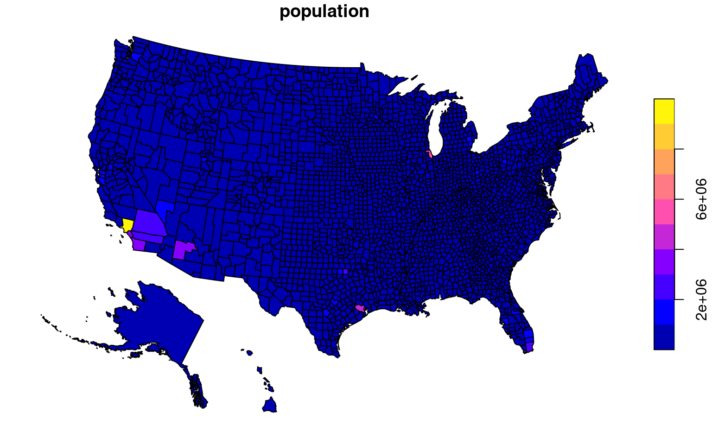
Data preparation
The spatial data we just loaded has some quirks, so in this document, I explain how you can tidy it up to make it more suitable for the assignment. To do this, we will be using the dplyr library which provides functions for selecting, filtering and combining data in various ways. This week we’ll just be seeing these in action, but in later weeks we’ll be looking more closely at their operation.
The tasks covered in this document are + Filtering data to remove Alaska and Hawai’i + Saving data to spatial data files to make the filtering we did permanent + Grouping data to make a states dataset + Adding new attributes to a dataset using mutate
Filtering data
The data in the election.gpkg file is a bit odd in that it has Alaska and Hawai’i where Mexico is in real life. To show how easy it is to select data in R we will use the filter function from the dplyr package to get rid of these. (You might not want to do this in your map, this is just to demonstrate filtering).
The variable we need to do the selection on is state. Say we wanted just to map California, we can do this by filtering the results dataset then plotting it:
results %>%
filter(state == 'CA') %>%
plot()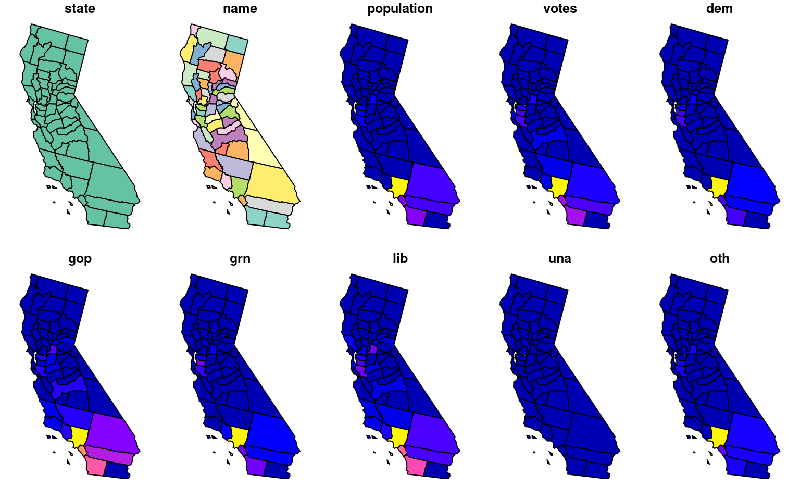
How does this work? You read the command above something like “take the results dataset, then filter it, then plot”. The pipe %>% directs whatever is before it, into whatever function comes after it. the filter function specifies a condition for which cases to retain in the filtered dataset. Here we want all those cases with the state value ‘CA’ (i.e., California). If we wanted all those states NOT California, we can use not equals which is designated by !=
results %>%
filter(state != 'CA') %>%
plot()## Warning: plotting the first 9 out of 10 attributes; use max.plot = 10 to plot
## all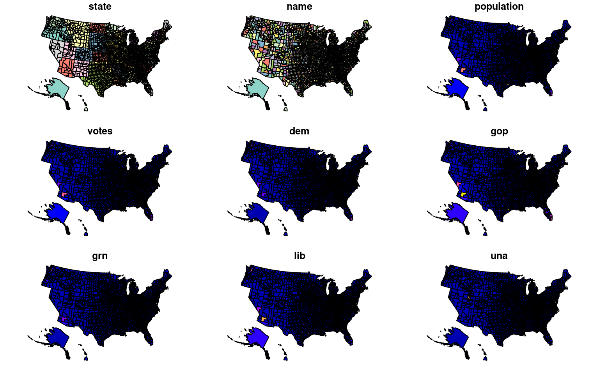
So, to get rid of Alaska and Hawai’i we can do this:
lower48 <- results %>%
filter(state != 'AK' & state != 'HI')Here we’ve combined the requirement that the state not be Alaska (AK) and not be Hawai’i (HI) using the & operator. This works fine and there is nothing wrong with this way of doing things.
This time, because we might want to retain the result we assign the output to a new variable called lower48 using <-.
We could also use the pipe operation to filter the data twice like this:
lower48 <- results %>%
filter(state != 'AK') %>%
filter(state != 'HI')Which will give us the same result:
plot(lower48)## Warning: plotting the first 9 out of 10 attributes; use max.plot = 10 to plot
## all
Because filtering data is not our primary focus right now, we will worry more about exactly how this works in later lectures and assignments.
For now, it is enough to know that we can do this kind of filtering to make new datasets, that the filter function is how we do it, and that the pipe operator %>% is a neat way to do it.
Again, the way to read the the command above is “start with results as the input, pipe it into the first filter (which throws away Alaska, AK) then pipe it into a second filter (which throws away Hawai’i, HI)”. Pipe functions are central to the R tidyverse.
Either way, we now we have a dataset with only the contiguous (‘lower 48’) states of the US.
Saving data
Saving a dataset is easy. Just as there is a st_read function, there is an st_write function. We tell it the dataset to save, and the filename to use, and that’s pretty much it.
The only complication is that if the file already exists, then we also have to tell it that it is OK to delete the existing file, using a delete_dsn parameter (delete_dsn denotes ‘delete datasource named’).
So here goes with delete_dsn set to TRUE just in case you end up running this command again later.
st_write(lower48, 'lower48.gpkg', delete_dsn = TRUE)## Deleting source `lower48.gpkg' using driver `GPKG'
## Writing layer `lower48' to data source `lower48.gpkg' using driver `GPKG'
## Writing 3087 features with 10 fields and geometry type Multi Polygon.That’s it. You should find that there is now a new geopackage file in the folder you are working in. We can also save to other data formats. For example
st_write(lower48, 'lower48.geojson', driver = 'GeoJSON', delete_dsn = TRUE)## Deleting source `lower48.geojson' using driver `GeoJSON'
## Writing layer `lower48' to data source `lower48.geojson' using driver `GeoJSON'
## Writing 3087 features with 10 fields and geometry type Multi Polygon.will save a GeoJSON file.
Grouping data
The lower48 dataset includes an attribute state which tells us the US state in which each county is found. We can use this information to make a new shapefile by dissolving counties together based on the value of this attribute. In ESRI Arc products you may have seen this already as a ‘dissolve’ operation. It would be nice if exactly that function was available in sf but we actually use the dplyr function group_by instead. Again we use pipes:
states <- lower48 %>%
group_by(state) %>%
summarise(across(where(is.numeric), sum)) %>%
as.data.frame() %>%
st_as_sf()The last two lines here should not be required, but are a workaround for a problem reported on some combinations of package versions that seems to be affecting the lab computers.
Here we pass the lower48 dataset to the group_by function, which will use the state attribute to group counties. The second pipe sends this result to the summarise function, which uses across with a where clause to check if attributes are numeric (the is.numeric parameter), and if they are, combines values by using a sum operation.
tm_shape(states) +
tm_polygons(col = 'population')
With all that done, we can write the states dataset out to a new file to save our work
st_write(states, 'states.gpkg', delete_dsn = TRUE)## Deleting source `states.gpkg' using driver `GPKG'
## Writing layer `states' to data source `states.gpkg' using driver `GPKG'
## Writing 49 features with 9 fields and geometry type Unknown (any).Adding new attributes
Often the attributes we are provided with in a dataset are not quite what we want. Perhaps we want proportions or percentages rather than counts. Or maybe we want densities per unit area, or maybe we want the differences or sums of the original attributes.
It is easy to add new attributes to an existing dataset using the mutate function from the dplyr package. For example, to create a new variable showing the percentage of population in each state that voted we can do:
states <- states %>%
mutate(turnout = votes / population * 100)Note that we have to assign the result of the mutate back to the same variable to add it to the dataset. This seems like a nuisance at first, but you’ll get used to it.
tm_shape(states) +
tm_polygons(col = 'turnout')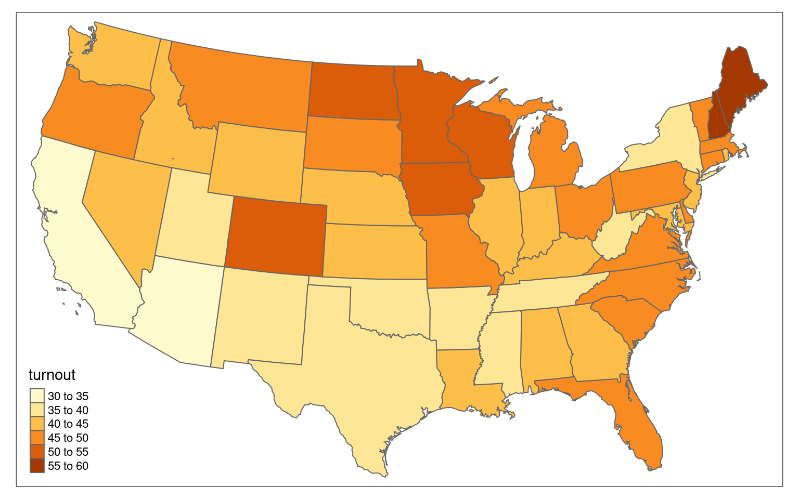
Try adding some other new variables, such as (say) the margin between the Republican (gop) and Democratic (dem) votes in each state, or the percentage of votes cast for one of the parties.
Generally speaking it is easier to add new attributes to a dataset, and then when you are happy you have all the attributes you need you can tidy things up a bit by dropping ones you don’t need using select.
Keep in mind if you add new attributes or make new datasets in this way that
- they are just as valid as the original datasets and attributes, and
- they aren’t permanently stored until you use
st_writeto save them to a file
How to use the tmap package
The tmap package provides a straightforward way to make simple but effective thematic maps in R. It can’t do all the things you might want in the realm of thematic mapping, but it can do most of the commonly required things, and more importantly do them in a flexible and straightforward way.
A good resource for understanding tmap is provided by this book chapter online.
The idea of tmap is that we layer map elements onto a map object. We’ve already seen this last week, so a simple map is something like
tm_shape(lower48) +
tm_polygons()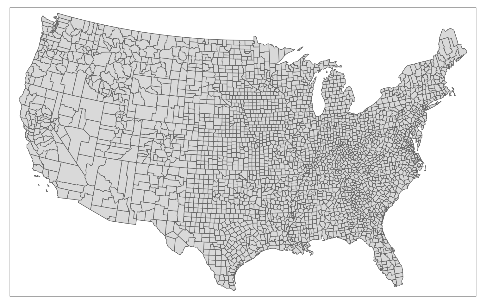
The first part of the above command tm_shape(lower48) says something like “stand back! I am going to make a map, with input dataset lower48”. tm_shape makes the map object, which we can then add more layers to. In the simple example above, we add to it + tm_polygons(), which says something like “and you should style the map based on the fact the data are polygons”. For the particular kind of map you are making in this assignment—a choropleth map— most of the critical information about how the map should look will be included in additional parameters we supply to the tm_polygons function.
The various aspects of this are discussed in the sections listed below + Specifying the attribute to be mapped + Specifying the colour palette + Specifying the classification scheme + Adding more layers + Other stuff
Specifying the attribute to map
The most basic parameter of the tm_polygons function is the colour of the polygons. This can be a single colour for all polygons
tm_shape(lower48) +
tm_polygons(col = 'darkgrey', border.col = 'white')I’ve also shown here how you can change the outline colour (border.col) for future reference.
A single colour isn’t very interesting, if instead we want to base the colours on the value of one of the dataset attributes, we name that attribute in the call to tm_polygons:
tm_shape(lower48) +
tm_polygons(col = 'votes')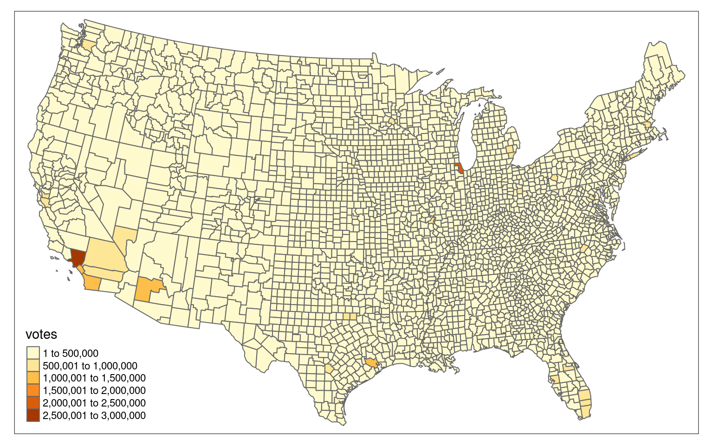
Specifying the colour palette
Just like Arc used to tmap has a mysterious preference for a kind of muddy orange colour as the default. Just like Arc it also allows you to specify a very wide range of alternative colour palettes, and you should consider the choice of these carefully in making your map. We specify the colour palette by name. You reverse the direction of the palette by prefixing its name with a - sign.
tm_shape(lower48) +
tm_polygons(col = 'votes', palette = 'PRGn')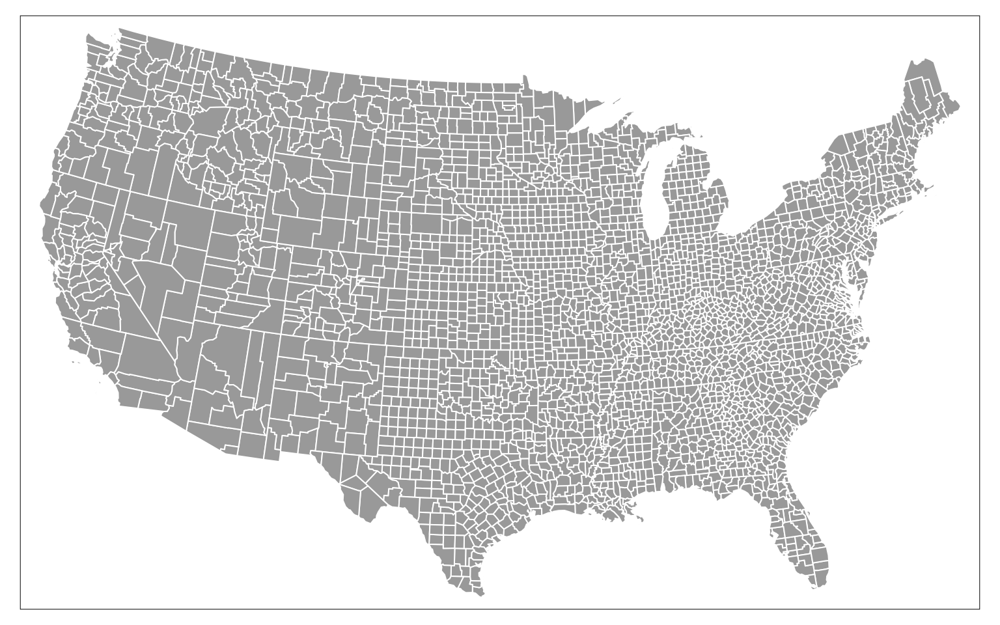
All the named palettes can be examined using the palette explorer in the tmaptools package. This might require you to install an additional library. If so use the Tools - Install Packages… menu option in RStudio to do so. After tmaptools is installed, you can do:
library(tmaptools)
palette_explorer()Note that after you run the palette explorer you have to close it to do anything else!
You can get a feel for what many of the available palettes will look like in an actual map at this website.
Specifying your own palette is much trickier, and involves supplying the palette option of tm_polygons with a vector of colours that you want it to interpolate along.
tm_shape(lower48) +
tm_polygons(col = "votes", palette = c("orange", "purple"))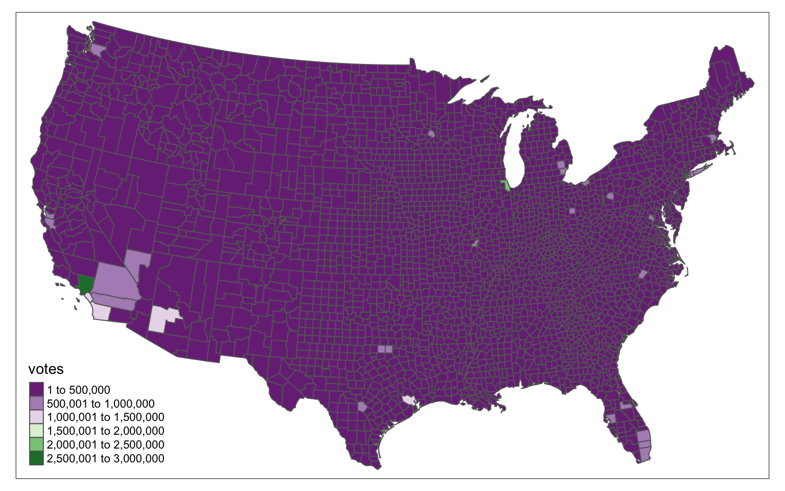
It is difficult to control the behaviour of this option precisely, so I recommend you stick with the built-in named palettes to begin with. They provide a lot of options, without trying to get too clever. It may still be interesting to explore this option, however.
Specifying the classification scheme
Specifying the colours and the attribute is only half the choropleth map design problem. The other aspect is to specify both the number of colours to use, and more importantly how to divide the values of the mapped attribute into classes for colouring. This aspect of the design is determined by the style and n parameters. For example
tm_shape(lower48) +
tm_polygons(col = 'dem', palette = 'Blues', style = 'quantile', n = 9)
will produce a classification based on quantiles and 9 classes. There are a number of different possible classification styles:
equalwill divide the data range into equal length intervalssdis a variant of equal intervals where the intervals will be in some round number of standard deviationsquantilewill divide the range so that each class has an approximately equal number of cases (in this case counties); depending on how the data are distributed, this may result in intervals of very different sizeskmeans,hclust,bclust,fisherandjenkswill attempt to cluster the data into groups that make sense with respect to the distribution of the data valuescontwill not set up classes at all, but will assign colours to cases (i.e., counties) based on their exact values along a continuous range
The best way to get a feel for these is to experiment.
One thing you should do is examine the distribution of the attribute you are mapping to make sure that the chosen style of classification makes sense. You can do this using a histogram to see the distribution of the attribute you are mapping:
hist(lower48$votes)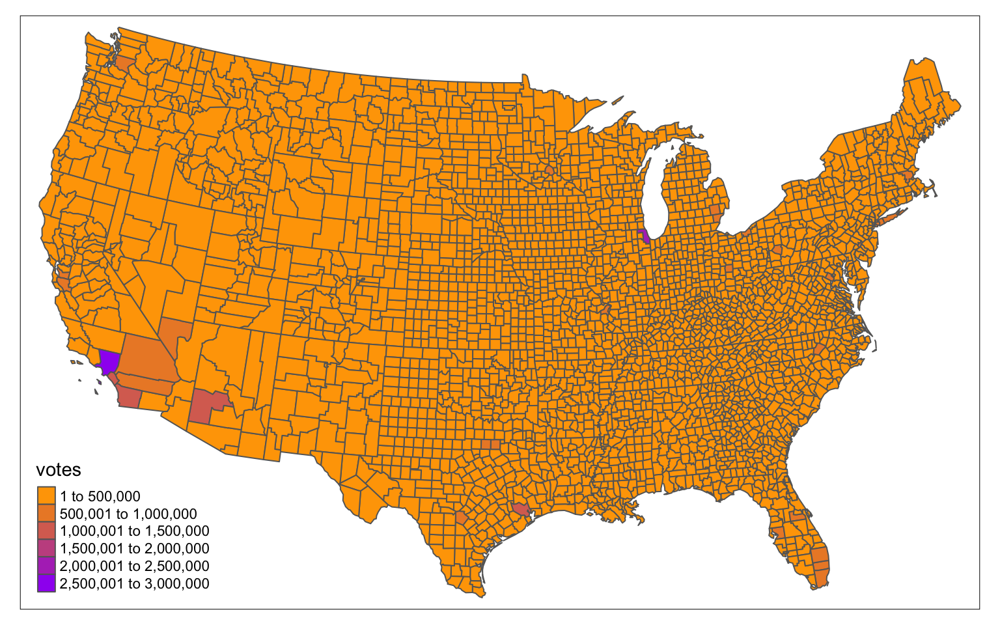
For example, in this case, the votes attribute is highly skewed, because there are a small number of very high population counties. This means that if we use equal intervals (say intervals of 200,000 as in the histogram) then almost all the counties will be in the first class and there will be lots of classes (i.e., colours) with no associated county. In such a case it would make more sense to use a quantile style, although we then have to be sure that the chosen class boundaries make sense. Of course, the design problem will change if you focus on mapping not numbers of votes, but shares of the vote, since these are more comparable across counties regardless of their population (since they are inherently limited to a range between 0 and 100%).
One option is the pretty style, which will choose data values that are easy to read at equally spaced intervals.
tm_shape(lower48) +
tm_polygons(col = 'votes', palette = 'viridis', style = 'pretty')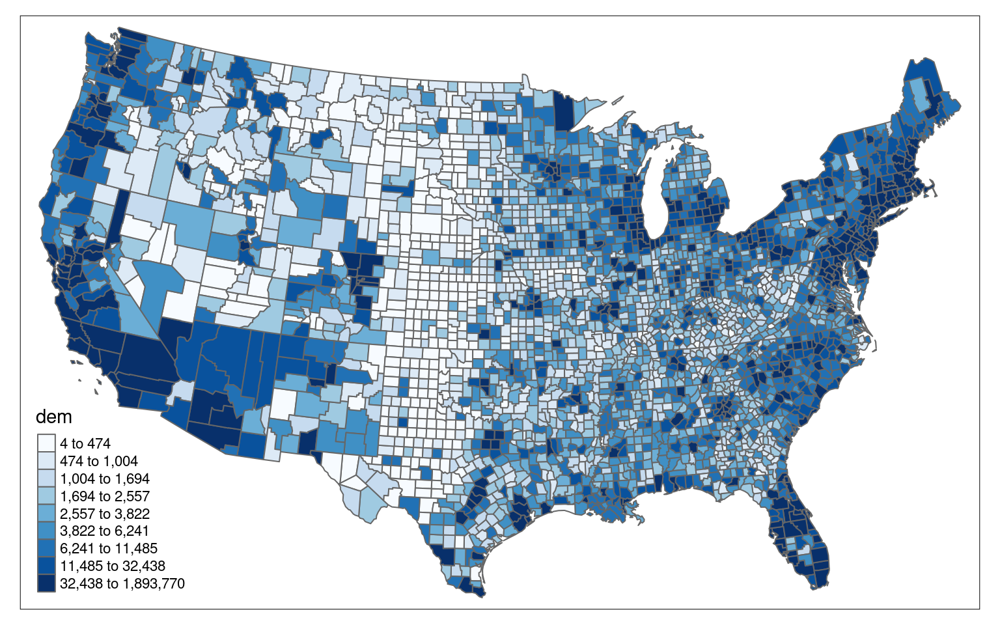
In preparing your final map for this assignment the choice of colour palette, number of classes and classification style are the most relevant aspects to consider, on which you will be expected to comment in writing up.
Adding more layers
To add an additional layer to a map, you add another tm_shape function call. In this case, we could add state boundaries
tm_shape(lower48) +
tm_fill(col = 'population', palette = 'Reds', style = 'quantile', n = 9) +
tm_shape(states) +
tm_borders(col = 'black')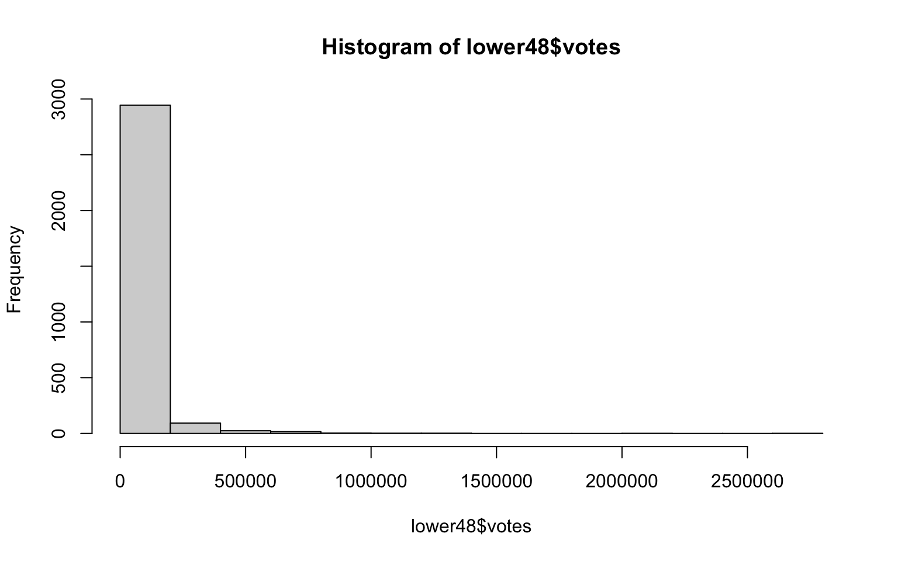
In this example, we use tm_borders because we’re only interested in the state boundaries, and have ensured that there are no county boundaries by using tm_fill instead of tm_polygons for the lower48 layer of the map. Notice that the order of adding layers is important. The tm_fill function applies to the most recently added data layer (lower48), then the states data layer is added, and so the tm_borders function which follows applies to it.
Other stuff
There are many other map elements that can be controlled using tmap functions. We can add a north arrow and scale bar using tm_compass() and tm_scale_bar(). We can move the position of the legend around using tm_legend() options. We can add text using tm_text(). Here’s an example with many options.
tm_shape(lower48) +
tm_fill(col = 'population', palette = 'Reds', style = 'quantile', n = 9, alpha = 0.75) +
tm_legend(outside = TRUE, outside.position = 'right') +
tm_shape(states) +
tm_borders(col = 'black', lwd = 2) +
tm_text(text = 'state', shadow = TRUE, remove.overlap = TRUE) +
tm_compass() +
tm_scale_bar(position = 'left')Two options that are good to know about both used here are that the line thickness in plots is controlled by a lwd setting, and opacity of colours by an alpha setting.
This is not a perfect map by any means (maybe not even a good one). You may see duplicate labels on the states because some states have more than one polygon (for example California and Texas have offshore islands) and tmap may label each island (the remove.overlap option helps a bit). There are ways to fix this kind of problem, but we won’t worry about that for now.
The best way to figure out all these options is to either ask for help in the lab sessions (or on slack), or to use the help available, by prefixing the command you want to know more about with a ? mark, such as
?tm_legendAny of the functions in R has associated help that you can consult in this way. The explanations can be a little bit technical sometimes, but it is a good idea to get used to consulting the help.
Above all, you should not be afraid to experiment!
Assignment 1 - Making maps
Your task is to make a map of the 2016 presidential election result contained in the supplied election.gpkg dataset.
In doing this, you need to consider the following issues:
- What are appropriate data to map? It may be that none of the supplied attributes is quite what you need to make an effective map, so you may need to add one or more new attributes (this was explained here)
- Choose an appropriate map classification style, a sensible number of classes, and a meaningful colour scheme (there are explanations of how to do all these things here)
- Add any additional map features that you think are useful such as a legend, north arrow, scale bar, overlay of state boundaries and so on (also discussed in that set of instructions).
Some particular questions to consider:
- What is the most salient piece of data in an election situation? Is this piece of data available in the original dataset? How could you add this data to the provided dataset?
- What is the most salient information in US Presidential elections in particular? (Do a bit of reading about the electoral system in the US, particularly the electoral college). Would that make a ‘better’ or more interesting map?
- Are the numbers of votes more relevant than the relative vote shares of each party (keeping in mind the very large differences in county populations)?
- For reasons mostly to do with television rather than politics, the colour conventions in US politics are Democrats (
dem) = blue, Republicans (gop) = red. Consider this when choosing a colour palette to work with. - Consider adding the state boundaries as a layer on top of the county results(if you are even showing the county results) (how to do this is covered in the tutorial materials)
- If you really feel you need to include context information (like, for example, Mexico and Canada) one approach is to make a web map (
tmap_mode('view')), and export it as an image. Be careful about this option however, as it may mean using a strange projection. Export from the web map view is not very predictable, and may work better if you export Export - Save as Web Page… first then screen shot from the web page in a browser.
Below is an example map

There is plenty wrong with this map, so don’t necessarily consider it something to aim for. It might not even be showing the most relevant data. (There is no ‘correct’ map in this assignment, the important thing is your design choices and explanation, and also getting comfortable with using the tools at your disposal.)
When you have made a map you are happy with, use the plot export feature in RStudio to export it to a PNG image file, and then include it in a Word document, including a short write up explaining the design choices you made to produce your map. There is no need to provide the R code you used—I am more interested in the design choices, not how they were accomplished. Half the mark for this assignment will be based on the map, and half on your explanation of the choices you made.
Once you have finished your write up (it does not need to be very long) then export the Word document to a PDF file (make sure the document includes your map!) and save it to a filename that includes your name. Upload this PDF document to the dropbox provided on Blackboard by the end of the day on {{ site.data.dates.assignment_1 }}.